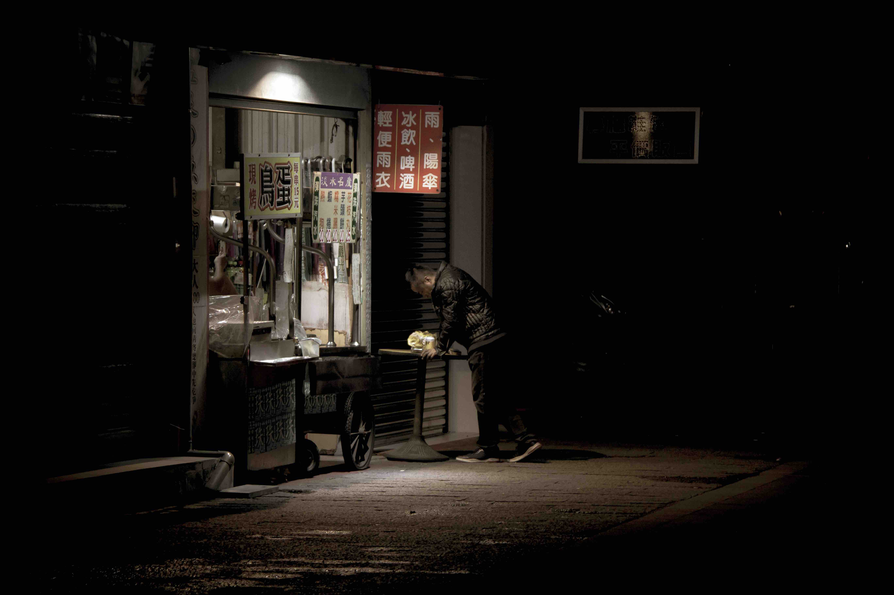
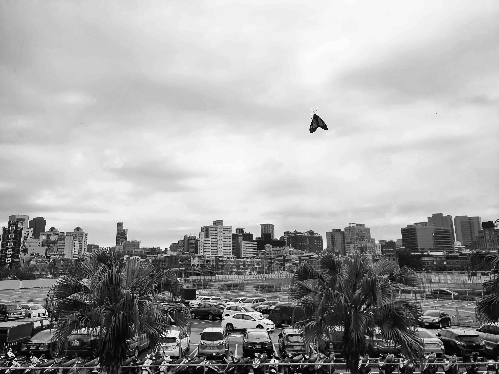

敬請期待...
作品名稱：日落時分的溫暖
作者：王睿億
傍晚時分，太陽將至海平面，在海面上到倒映出一波波光影。照片的左側有一群高中生正在嬉戲，再往遠處一些，則看到Ｗ型沙灣的另一頭有佇利幾個渺小的人影，而照片的右下方，有一個爸爸牽著自己的孩子小心翼翼地走在沙灘上。整體天空呈現灰藍色，而海面上沒有明顯的波浪，平靜的氣氛籠罩著整個沙灣。就在天色暗淡前的時光，這群人享受著夕陽的溫暖和彼此之間的友情和親情，他們珍惜這每天都會出現卻依然很美的景色，也珍惜著彼此在海邊相處的時光。
作者：王睿億
我站在魚鱗天梯的石階上，眺望著這自然形成的Ｗ型沙灣和美麗的夕陽映照在海面上的一波波光影，聽著高中生嬉戲的聲音，也觀察著那對爸爸與孩子之間的互動，喀嚓一聲把這難忘的畫面捕捉了下來，此時此刻我感受到人們之間彼此的珍惜，心中也漸漸溫暖了起來。
作品名稱：拂曉的少女
作者：陳秉寬
相對於自然，我們都很渺小，欣賞及記錄，並且愛護這個世界，才是人與自然最好的相處之道
作者：陳秉寬
可憐實習仔，有空還是可以來我的IG看看啦@kenchen5
作品名稱：怪手與牛
作者：劉家瑋
作者：劉家瑋
作品名稱：無
作者：劉家瑋
作者：劉家瑋

作品名稱：淡水 淡水
在我的印象之中，淡水的街，還有路旁的店，總是有一種年代感。像是歷經幾十年，手藝從父傳兒，再從兒傳孫。歲歲年年，年年歲歲，時間的大流之中，每一個人都是平凡的。
作者：彭笑一
在我的印象之中，淡水的街，還有路旁的店，總是有一種年代感。像是歷經幾十年，手藝從父傳兒，再從兒傳孫。歲歲年年，年年歲歲，時間的大流之中，每一個人都是平凡的。
圖中的人
他也許是老闆，也許不是
他也許剛結束營業準備回家，也許是最後一個來吃的熟客
他也許看著手機為其他事發愁，也許只是想喝桌上的啤酒
一個地方，一個人，一個故事
這就是淡水
作者：彭笑一
喜歡用不同的角度去看待生活，想用攝影去捕捉這些令人感動的瞬間，發現平凡中的美好。
作品名稱：路的盡頭
作者：彭笑一
於生活，抑或是人生之中，不知道路的盡頭，到底是通往自由，還是通往毀滅？無奈，但幸運的是，困在牢籠裡的我們永遠也不知道，於是安然度世便也成了福賜。
作者：彭笑一
喜歡用不同的角度去看待生活，想用攝影去捕捉這些令人感動的瞬間，發現平凡中的美好。
作品名稱：窗和帘
作者：彭笑一
這是臥室裡的窗帘，平時沒怎麼在意它，有一天在床上臥著的時候看到它。在昏暗的房間裡，外面的光投在窗帘上，又在牆上反射，當時就覺得這些線條和光影很好看。
作者：彭笑一
喜歡用不同的角度去看待生活，想用攝影去捕捉這些令人感動的瞬間，發現平凡中的美好。
作品名稱：Embrace the world
作者：陳秉寬
相對於自然，我們都很渺小，欣賞及記錄，並且愛護這個世界，才是人與自然最好的相處之道
作者：陳秉寬
可憐實習仔，有空還是可以來我的IG看看啦@kenchen5
作品名稱：＂minor＂
作者：李昀儒
在茫茫人海裡，小女孩在父親的懷抱裡，似乎不想面對世俗的洪流；也罷，畢竟還小，一切尚未重要
作者：李昀儒
拍照拍久了，可能就會忘記自己拍照的初衷；是為了 心靈上的陶冶嗎？是為了文青嗎 ？是為了ig追蹤人數更多嗎？我覺得攝影是闡述一個屬於自己的故事。但是還是可以追我ig啦嘻嘻：jeffrey880913
作品名稱：終始與始終
落葉代表死亡，樹根是新生；
作者：李明蒨
落葉代表死亡，樹根是新生；
生命是這樣，死生循環，相互靠近。
作者：李明蒨
俯地即拍。
作品名稱：衝
他們說，前方是自由的寬廣的天空呀
作者：高仕平
當代的我
他們說，前方是自由的寬廣的天空呀
他們說，前方是光明的無量的未來呀
他們說，前方就是專屬於你的大海呀
.
我一直
肆無忌憚地飛向那片天
毫不猶豫地衝向那片海
直到最後發現
啊啊啊這是一面牆啊來不及停下來啊
.
腦漿四溢
作者：高仕平
當代的我
現代的我
浪漫的我
用底片拍照
用ipad寫詩
作品名稱：釣
大吊車吊貨櫃
作者：高仕平
當代的我
大吊車吊貨櫃
小釣竿釣魚
作者：高仕平
當代的我
現代的我
浪漫的我
用底片拍照
用ipad寫詩
作品名稱：歸
作者：林士恆
車內的窒息與車外的自由形成對比，象徵著即將回到疲憊生活中的人們的心境。車外寬闊而鮮明的月台，猶如嚮往中的自由生活；而車內狹小而冰冷的車廂，則代表生活的艱難。
作者：林士恆
林士恆，就讀呼吸系，專長是呼吸，夢想是當坨呼吸肉，什麼都不用做，呼吸就好。
作品名稱：更迭
花開花落
作者：邱稟灃
牙醫系大二學生
花開花落
永遠按著大自然的規則走
我們也一樣
無法逃脫於這個迅速改變的世界
major與minor
更是更迭頻繁
作者：邱稟灃
牙醫系大二學生
一個喜歡在閒暇時間就拿出相機
興致一來就隨心所欲地拍下照片的人
最近也喜歡上慢跑與單車
享受那微風吹拂的感覺

作品名稱：城市與我的關係
作者：戴利安
「就讓世界依然，而我是我」-Tizzy bac的歌
作者：戴利安